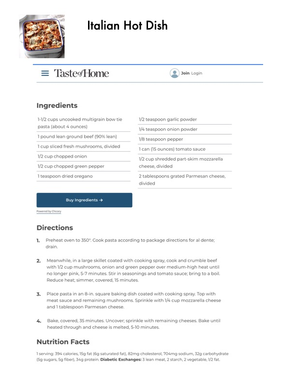

Italian Hot Dish

Original cookbook page 404
Ingredients
- 1-1/2 cups uncooked multigrain bow tie 1/2 teaspoon garlic powder
- Pasta SSSUES Gunes 1/4 teaspoon onion powder
- 1 pound lean ground beef (90% lean) 1/8 teaspoon pepper
- 1cup sliced fresh mushrooms, divided can (15 ounces) tomato sauce
- V2 cup chopped onion 1/2 cup shredded part-skim mozzar
- 1/2 cup chopped green pepper cheese, divided
- 1 teaspoon dried oregano 2 tablespoons grated Parmesan che
- divided
- Taye ie [eal ied
- Powered by Chicory
Instructions
- drain.
- Meanwhile, in a large skillet coated with cooking spray, cook and crumble bee with 1/2 cup mushrooms, onion and green pepper over medium-high heat un' no longer pink, 5-7 minutes. Stir in seasonings and tomato sauce; bring to a bc Reduce heat; simmer, covered, 15 minutes.
- Place pasta in an 8-in. square baking dish coated with cooking spray. Top with meat sauce and remaining mushrooms. Sprinkle with 1/4 cup mozzarella chee and 1 tablespoon Parmesan cheese. 4, Bake, covered, 35 minutes. Uncover; sprinkle with remaining cheeses. Bake un heated through and cheese is melted, 5-10 minutes. Nutrition Facts (5g sugars, 5g fiber), 34g protein. Diabetic Exchanges: 3 lean meat, 2 starch, 2 vegetable, 1/2 f
Recipe #404 from collection